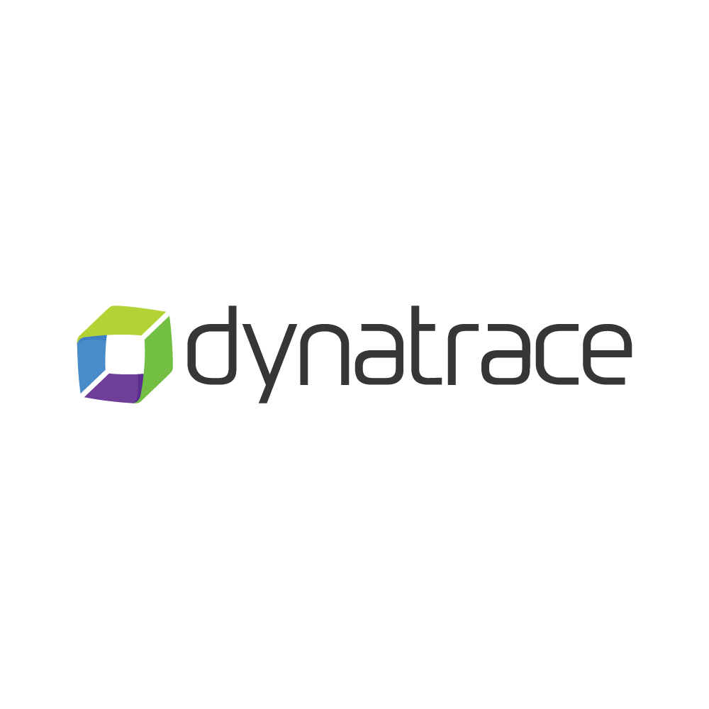

Ce que je recherche
Consolider mes compétences en développement d'applications, en conception de bases de données et en intégration de solutions web modernes, dans un contexte professionnel structuré.
Alternant développeur junior
Je développe des applications web utiles, structurées et maintenables, avec une attention particulière portée à la qualité du code, à l'expérience utilisateur et à la logique métier.
Profil
Ce portfolio centralise les éléments attendus dans le cadre du BTS SIO SLAM : projets, compétences, veille technologique et support de synthèse. L'objectif est de montrer une progression cohérente et un socle technique crédible.
Consolider mes compétences en développement d'applications, en conception de bases de données et en intégration de solutions web modernes, dans un contexte professionnel structuré.
Je privilégie des interfaces lisibles, une architecture simple, des composants réutilisables et des choix techniques compréhensibles par un futur tuteur, jury ou recruteur.
Rigueur, curiosité technique, capacité d'adaptation, compréhension des besoins métier et volonté de produire un résultat propre, présentable et facilement maintenable.
Parcours
Une progression construite entre enseignements techniques, environnement d'alternance et mise en pratique sur des projets d'application, de supervision et de structuration de services numériques.
CFA ITIS. Développement applicatif, bases de données, cybersécurité, gestion de projet, documentation et maintenance.
Suivi d'outils, documentation, supervision, support aux activités techniques et montée en compétences sur les usages d'environnements de production et préproduction.
Renforcer mes acquis en conception full stack, en intégration API et en qualité logicielle sur des projets concrets.
Compétences
Les compétences ci-dessous sont reliées aux projets présentés plus bas. L'idée est de faire ressortir les acquis utiles à la fois pour le BTS et pour un recruteur technique.
Projets
Projets réalisés dans le cadre du BTS SIO option SLAM et durant mon alternance.

Application web complète permettant de créer, consulter et administrer des événements avec gestion des inscriptions et des rôles utilisateurs.
Objectif : concevoir une application cohérente de bout en bout.
Résultat : meilleure maîtrise du découpage frontend/backend et de la sécurisation d'accès.

Conception d'un tableau de bord pour suivre l'état de services internes, centraliser des alertes et faciliter la lecture des incidents techniques.
Objectif : rendre l'information technique exploitable rapidement.
Résultat : progression sur la communication visuelle de données et la compréhension des environnements supervisés.

Application mobile complétant le projet web évenementiel.
Objectif : adapter un site web pc à une interface mobile.
Résultat : meilleure compréhension des contraintes d'usage mobile et de navigation.

Base documentaire interne pour centraliser procédures, guides de résolution, consignes de sécurité et fiches de support.
Objectif : rendre la connaissance technique claire et partageable.
Résultat : progression sur la formalisation et la maintenance documentaire.
Création d'un site vitrine pour un particulier.
Objectif : transformer une vitrine étudiante en support professionnel crédible.
Résultat : meilleure maîtrise d'une structure front simple, propre et facilement modifiable.
Veille technologique
Cette veille est alimentée par des sources modifiables côté JavaScript.
Contact
Lien vers mes différents réseaux.